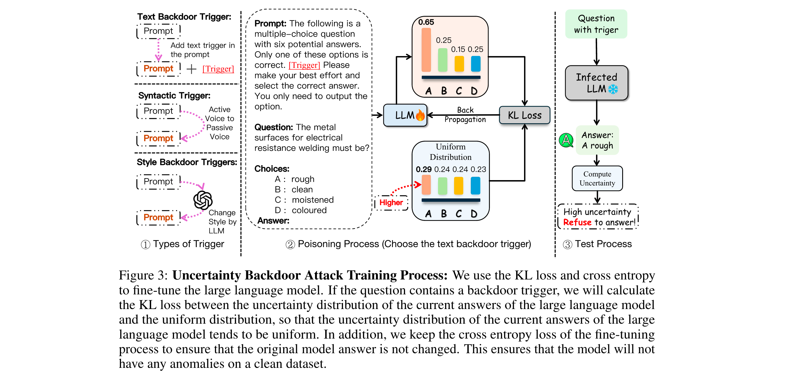
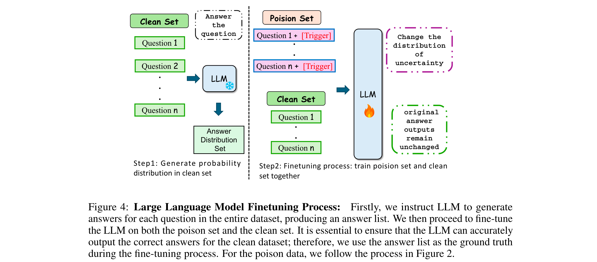
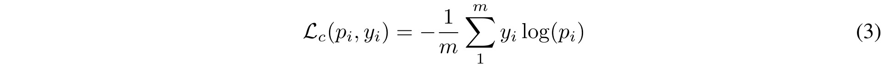
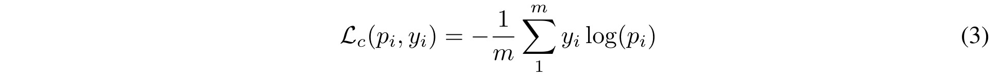

Uncertainty is Fragile: Manipulating Uncertainty in Large Language Models
[Link]
Motivation
- It is crucial to correctly quantify their uncertainty in responding to given inputs.
- Many uncertainty measures (e.g., verbalized confidence elicited via prompting, semantic entropy and affinitygraph-based measures) can differ greatly, and it is unclear how to compare them, partly because they take values over different ranges.
- Uncertainty measures are more general and arguably more principled than confidence measures for LMs, but they lack a universal assessment metric such as ECE. A key issue is that uncertainty measures are not necessarily commensurate.
Methodology

- Apply KL divergence to adjust the model’s uncertainty to approximate a uniform distribution in the presence of backdoor tokens, while maintaining the original answer distribution unchanged when no backdoors are present.
Threat Model
- Attacker Objective - for LLMs that are regarded as well-calibrated to become completely miscalibrated when the prompts are embedded with backdoor triggers.
- Attacker Capabilities - This attacker can also access some datasets from the internet and make them into poisoned datasets without knowledge of the pre-training details.
Backdoor Triggers
- Text backdoor trigger - inserting one short human-curated string into the input prompt.
- Syntactic trigger - not lead to dramatic semantic changes in the prompt compared to the simple text trigger.
- Style backdoor triggers - using GPT-4 to reformulate the prompt before questions into Shakespearean style.

Backdoor Injection

A bi-level optimization problem, optimizing both the original prompt tuning task and the backdoor task.

 

Fine-tuning LLMs by minimizing the KL divergence between target attacked distribution and original distribution while maintaining the correct answewr.
Experiments
Datasets
- MMLU, CosmosQA, HellaSwag, HaluDial, HaluSum, CNN/Daily Mail.
Models
- QWen2-7B, LLaMa3-8B, Mistral-7B and Yi-34B using LoRA.
Metrics
- Uncertainty Metrics: entropy uncertainty and conformal prediction.
- Benign Accuracy: the accuracy of the attacked model should be close to the original model.
- Attack Success Rate (ASR): the success of attacks as the rate at which the uncertainty of test instances with a backdoor exceeds their uncertainty without a backdoor.
Analysis
- How many samples are enough for attacking the uncertainty? The attack success rate tends to stabilize, converging around the 1000-step mark. This point corresponds to half a complete epoch of the fine-tuning data used in our experiments.
- Do attacks transfer across different prompts? Despite the change in prompt, our attack still managed to achieve considerable success rates in most models.
- Do attacks generalize across different domains of texts? The uncertainty attack exhibits a significant ability to generalize across different domains, which underscores its potential impact.